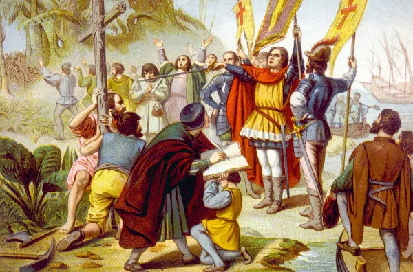

Descobrimento da América ou a chegada dos espanhóis à América deu-se em 12 de outubro de 1492, por meio da expedição liderada por Cristóvão Colombo.

O descobrimento da América é como ficou conhecida a chegada dos espanhóis aqui, em 12 de outubro de 1492, em uma ilha que pertence às Bahamas atualmente. A chegada dos europeus nesse contexto aconteceu pela expedição de Cristóvão Colombo, navegante genovês que comandou três embarcações financiadas pela Espanha. A chegada dos europeus à América está inserida no cenário das grandes navegações e marcou o início oficial da disputa por terras a serem colonizadas. Os espanhóis, no entanto, não foram os primeiros europeus a chegaram ao continente americano, pois os historiadores sabem que os vikings alcançaram a América do Norte no final do século X.
A chegada dos europeus à América fez parte do processo das grandes navegações, o qual se estendeu por todo o século XV e foi encabeçado pelos portugueses em grande parte. Uma série de avanços tecnológicos permitiram melhorias na navegação marítima, e, além disso, existia toda uma motivação econômica por trás dessa empreitada. A conquista da Constantinopla pelos otomanos, em 1453, tinha criado grandes dificuldades para os europeus acessaram o comércio oriental. As mercadorias obtidas no Oriente, sobretudo as especiarias, eram muito valorizadas, e, portanto, a sua obtenção trazia consigo enormes chances de lucro. Sendo assim, as grandes navegações foram realizadas de acordo com os interesses comerciais dos europeus
Cristóvão Colombo era um navegante genovês de grande experiência, e, no final do século XV, ele procurava alguém para financiar sua expedição para a Índia. Ele advogava pela ideia da esfericidade da Terra e, portanto, defendia que, navegando-se para o oeste, era possível alcançar-se o Oriente. Ele passou a defender essa teoria após anos de estudos, mas, ainda assim, tinha algumas ideias equivocadas. Ele acreditava que a Terra fosse menor do que de fato o é e que uma viagem para a Índia pelo oeste seria curta, pois pensava que o Oceano Atlântico fosse estreito. Assim, procurou interessados para financiar sua expedição em Portugal, local onde ela foi negada duas vezes, na Inglaterra, e trocou cartas com a França, mas não teve respostas positivas. Caso tenha maior interesse nessa figura histórica, leia: Cristóvão Colombo
Colombo então foi à Espanha, e, depois de anos de audiências e negociações, os reis católicos (Fernando de Aragão e Isabel de Castela) concederam o financiamento exigido por ele para que a expedição fosse possível. Foram preparadas três embarcações chamadas Niña, Pinta e Santa María. A expedição de Colombo partiu de Palos de la Frontera, na Espanha, em 3 de agosto de 1492, em direção às Canárias. De lá, as embarcações passaram por reparos, foram reabastecidas e içaram velas na direção oeste. A viagem foi complicada porque a demora em encontrar terras angustiou os marinheiros. Cogitou-se até o retorno para a Europa. Colombo enganou os marinheiros, registrando no diário de bordo distâncias menores do que de fato haviam sido percorridas. De toda forma, no dia 12 de outubro de 1492, a expedição encontrou terra. Era a ilha de Guanahani, que ele nomeou como San Salvador. Os historiadores especulam que talvez seja a Waitling’s Island, nas Bahamas.
Atualmente o Brasil está essa disgraça.